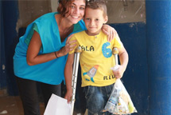

SEP20
SEP26
Mahmoud, a 15-year-old Syrian refugee, lives with his family in this underground shelter in Lebanon. Read more via guardianwitness.com
WITH COVERAGE FROM:
- Syria
- Lebanon
- Jordan
- Turkey
- Iraq
- Egypt
THEMES:
Refugees, Men, Women, Children, Education, Hope, Play, Shelter, Sanitation, Health, Border, Elderly
17
items added to the
UNHCR Media Library
UNHCR Media Library
MORE UNHCR PHOTOS
MORE UNHCR VIDEOS
JORDAN
IRAQ
JORDAN
JORDAN
JORDAN
LEBANON
JORDAN
TURKEY
LEBANON
LEBANON

LEBANON
LEBANON
LEBANON
LEBANON

RT @UN: Ban Ki-moon on #SyriaCrisis at #UNGA: "A lost generation of young people now fills refugee camps" http://j.mp/9UFPSF #Syria
Head of @UNHCRLebanon video interview: The Plight of #Syria Refugees in #Lebanon | The Agenda http://buff.ly/1bDn6UK
Brazil grants special visas to facilitate entry for Syrians fleeing conflict http://wapo.st/1eE5hpG #humanity #Syria
@Refugee flow into #Jordan via unofficial border x'ings relatively stable w 256 entering last 24 hrs. Surprisingly 224 also returned #Syria.
#Syrian #refugee mothers are often unable to pay a subsidized fee of $2 to access primary health care in #Lebanon
From 01-24 Sept. 5,755 #Syrian @refugees, incl. 3,000 children have fled to #jordan. Last 10 days ave 300+day. Hope to be bak to #jo 2morrow
< UNHCR SOCIAL MEDIA